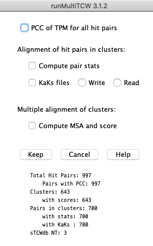

|
runMultiTCW - Build Comparison Database from Multiple sTCWdbs
runMultiTCW takes as input two or more singleTCW (sTCW) databases
and builds a multiTCW (mTCW) database of clustered sequences.
See mTCW UserGuide for details
and Overview for example mTCWdb summary.
Main panel
|
→ 1. sTCWdbs (single TCW databases).
Add/Edit: Define the input sTCW databases
(see panel #1), which can be created from
nucleotide sequences (NT-sTCW) and/or protein sequences (AA-sTCW).
For NT-sTCW, the nucleotide sequences and translated ORFs will be loaded.
Build database: Builds a database of all sequences, TPM, DE, annotations and GOs.
→ 2. Compare sequences
Run Search: This creates a file of all sequences and performs a heuristic search1 against itself
to determine similar sequences. The search program and parameters can be changed (see panel #2).
Add Pair from Hits: All pairs from the Hit file are entered into the database.
→ 3. Cluster Sets.
Add/Edit: Add a cluster type to be computed (see panel #3), and the list of methods below.
Add New Cluster: The clusters defined in the table will be computed and added to the database.
|

|
The methods are:
- BBH - TCW algorithm for Bi-directional Best Hit between N sTCWdbs, where each resulting cluster has N sequences and all pairs are BBH.
- Closure - TCW algorithm for determining clusters, where each sequence in a cluster has
a hit, good similarity and good overlap with all other sequences in the cluster.
- Best Hit - TCW algorithm for clustering on Hit ID or Hit Descriptions.
- OrthoMCL3 - runMultiTCW executes the
orthoMCL scripts and then loads the results into the mTCW database.
- User Defined - load a file of clusters where the file format is the orthoMCL format.
→ 4. Statistics
Add Stats: Add statistics (see panel #4), as follows.
- PCC (Pearson Correlation Coefficient): This is only relevant if there are shared conditions,
as it is used to determine how similar the TPM values of the conditions are.
It is run on all pairs in the database.
- The following is only relevant for mTCW databases that are built with
only NT-sTCW databases, as it is based on the aligned nucleotide coding regions.
- Each pair that has a hit and is in a cluster is pair-wise aligned.
- Statistics are computed from the alignment, such as synonymous and nonsynonymous codons, TS/TV, etc
(as summarized on Overview).
- The KaKs files are written from the alignments for input to
the KaKs_calculator4 along with a script to run from the terminal.
- Read KaKs files: This is only relevant if the KaKs_calculator has been
executed on the KaKs files. It reads the results into the database.
- Compute the MSA for all clusters and score them. The MAFFT4 program is used; it occasionally
fails on a cluster, in which case MUSCLE5 is used.
1. Add single TCW database

|
2. Run Search

|
3. Add a cluster method

|
4. Add statistics. The counts on the bottom are updated after Run Stats is executed.

|
- Supported search programs: any of the following programs can be used for the AA search, and blastn is used for the NT search.
- BLAST:
Altschul SF, Madden TL, Schaffer AA, Zhang J, Zhang Z, et al. (1997) Gapped BLAST and PSI-BLAST: a new generation of protein database search programs. Nucleic Acids Res 25: 3389-3402.
- Diamond:
Buchfink B, Xie C, Huson D (2015) Fast and Sensitive Protein Alignment
using DIAMOND, Nature Methods, 12, 59-60 doi:10.1038/nmeth.3176.
- Li L, Stoeckert CJ, Jr., Roos DS (2003) OrthoMCL: identification of ortholog groups for eukaryotic genomes. Genome Res 13: 2178-2189.
- Zhang Z, Li J, Xiao-Qian Z, Wang J, Wong, G, Yu J (2006) KaKs_Calculator: Calculating Ka and Ks through model selection and model averaging. Geno. Prot. Bioinfo. Vol 4 No 4. 259-263.
- Katoh K, Standley DM (2013) MAFFT Multiple Sequence Alignment Software Version 7: Improvements in Performance and Usability. Molecular Biology and Evolution Vol 30, Issue 4 772:780
- Edgar RC (2004) MUSCLE: multiple sequence alignment with high accuracy and high throughput. Nucleic Acids Res 32: 1792-1797.
|


{kind=link}